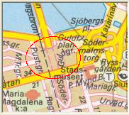
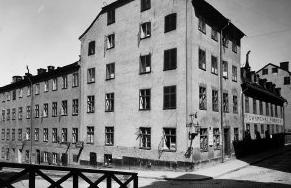
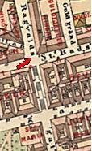
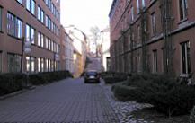
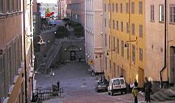

Södermalm i tid och rum
Brännkyrkagatan 6. Hörnet av Guldgränden. 1908
 | Gullfjärdsplan 1955 Namn efter kvarteret Guldfjärden (Gullfjärden 1679), som i sin tur övertagit ett av Riddarfjärdens äldre namn. IHolms tomtbok 1679 har fjärden sitt nuvarande namn (Riddare fiälen) men på en av ritningarna förekommeräven en alternativ namnform: »Riddare Fiählen, eller Gwllfiählen». Detta namn, Gullfjärden, omtalas även i andrasamtida källor, sålunda i Karl XI:s Almanacksanteckningar 1.2.1689 (Gulhellen). Gwllfiählen». |
Ett tredje namn har varitLortfjärden. Det förekommer sju gånger i Karl XI:s Almanacksanteckningar under åren 1687-97 (Lorthellen,Lort-Fielen). Enligt uppgift av den med Karl XI samtida Elias Palmskiöld har fjärden också kallats»Gråmunkeholmsfjälen» och »Kongsfjälen». Hos Palmskiöld ges följande upplysningar om fjärden:»Gråmunkeholmsfjälen som eljest kallas allmänt Lort- eller Gullfjälen, har en svavelaktig materia, tvivelsutanav den myckna dyngja och orenlighet, som dagligen ifrå alle orter ditkastas.» Namnet Gullfjärden bör uppfattassåsom ett utslag av drastisk folkhumor.


Brännkyrkagatan 8. Hörnet av Ragvaldsgatan. 1908


Brännkyrkagatan 6-8. Från öster. 2004


Brännkyrkagatan 6-8. Från väster. 2004